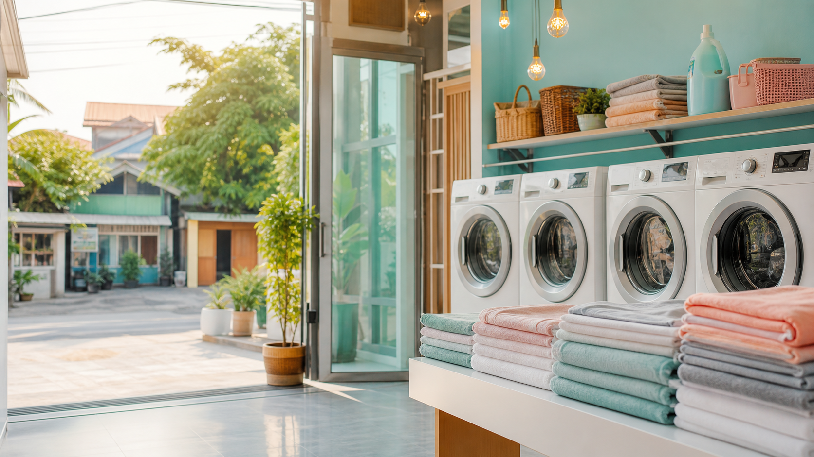
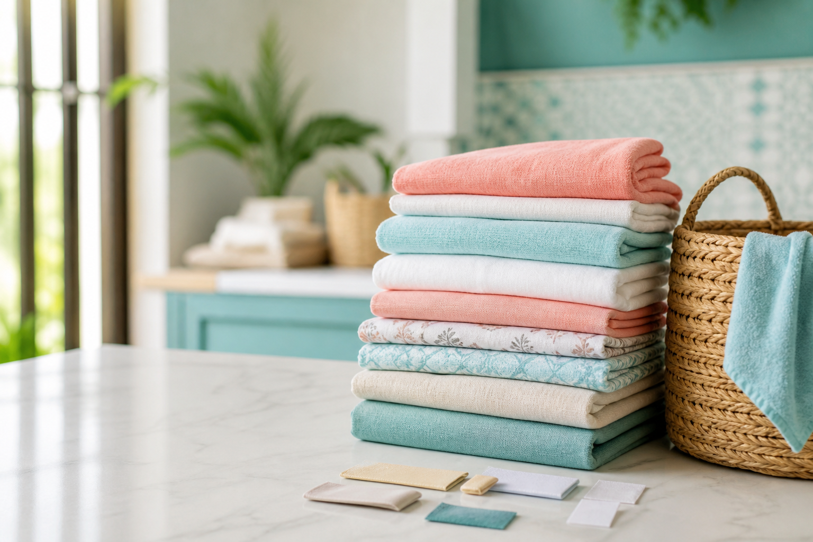

Cuci kiloan
Pakaian harian dicuci, dikeringkan, dilipat, lalu dikemas rapi dan wangi.
Laundry kiloan • cuci setrika • antar jemput
Bersih Kilat membantu anak kos, keluarga, dan pekerja sibuk mendapatkan pakaian bersih, wangi, dan siap pakai tanpa perlu keluar rumah.

Layanan laundry
Pakaian harian dicuci, dikeringkan, dilipat, lalu dikemas rapi dan wangi.
Paket praktis untuk baju kerja, seragam, dan pakaian yang harus siap dipakai.
Butuh cepat? Pilih layanan 24 jam dan atur jemput lewat WhatsApp.
Paket favorit
Cuci Lipat
Cuci Setrika
Express

Bukan cuma cuci
Cara order
Pelanggan kirim lokasi, perkiraan berat, dan paket yang dipilih.
Admin cek area lalu memberi pilihan jam pickup yang tersedia.
Cucian ditimbang, dicuci sesuai paket, lalu dikemas bersih.
Cucian kembali wangi bersama nota dan detail order.
“Tinggal chat, cucian dijemput sore, dua hari kemudian balik sudah rapi. Cocok banget buat anak kos yang sibuk.”
— Rani, pelanggan area kosArea demo: Bekasi dan sekitarnya. Nama laundry, nomor, harga, dan area masih dummy untuk contoh portfolio.
Cucian numpuk?
Ini demo website laundry buatan Infiraft. Cocok untuk outlet lokal yang ingin menampilkan harga, area jemput, dan jalur order dengan lebih meyakinkan.
Jadwalkan jemput cucian